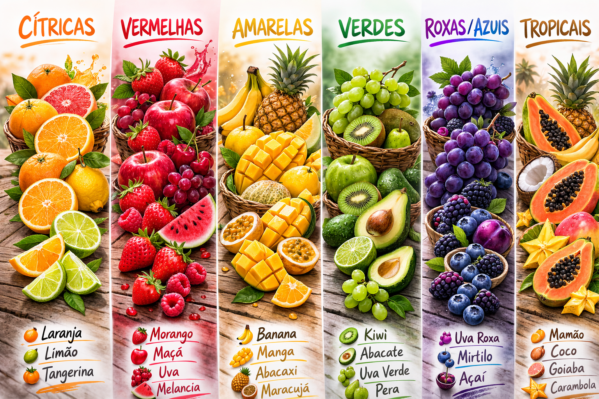
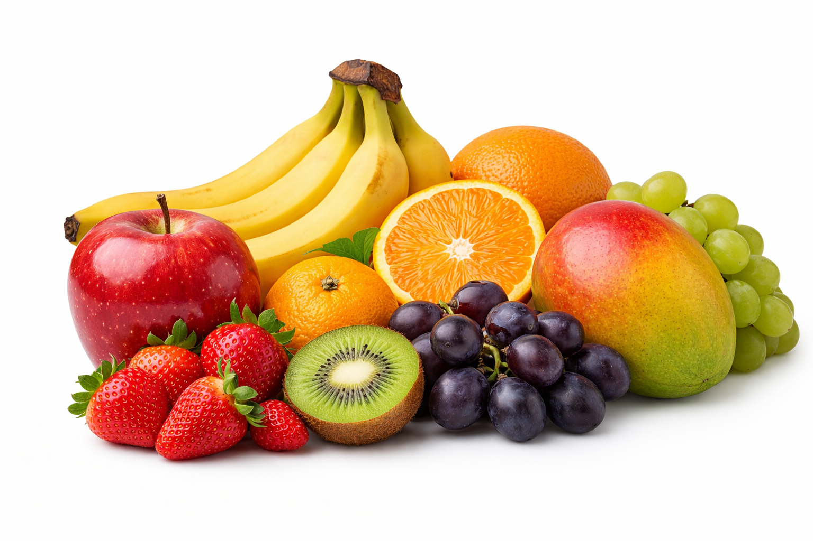
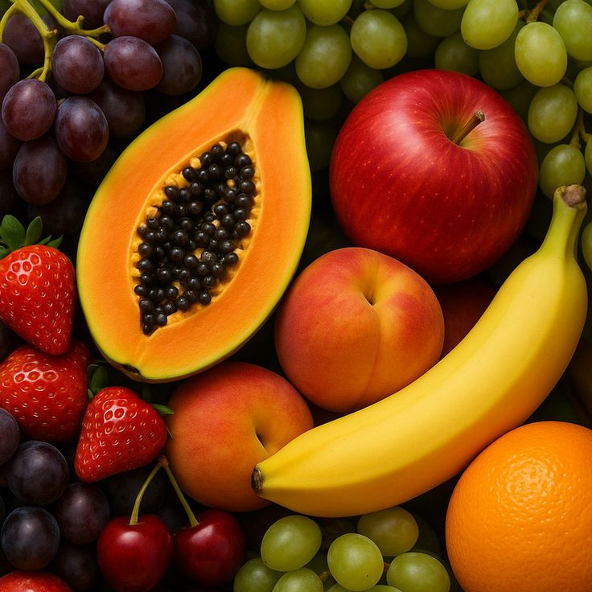

Bem-vindo ao nosso blog! Aqui você encontrará as frutas que todo ser humano deveria consumir pelo menos uma vez por dia. Descubra os benefícios nutricionais de cada fruta, como elas ajudam na saúde e como incorporá-las no seu dia a dia.


CURIOSIDADEAs frutas foram essenciais para a sobrevivência dos primeiros seres humanos. Antes da agricultura existir, elas forneciam energia rápida, vitaminas e água, ajudando nossos ancestrais a sobreviver e evoluir ao longo de milhares de anos.
Os valores nutricionais mostram o que a fruta realmente oferece ao corpo.Não é apenas sobre “calorias”, mas sobre qualidade nutricional.
As frutas possuem calorias naturais vindas principalmente dos carboidratos (frutose). Essas calorias fornecem energia rápida, ideal para:
As fibras são essenciais porque:
Muitas frutas têm entre 70% e 90% de água. Isso contribui para:
Frutas são fontes importantes de:
